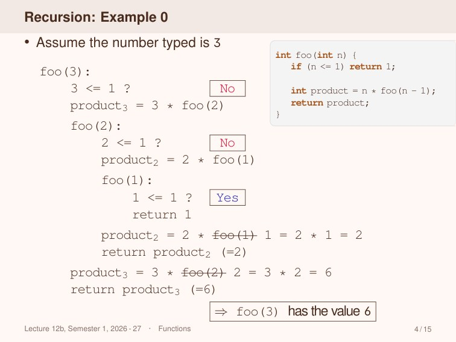
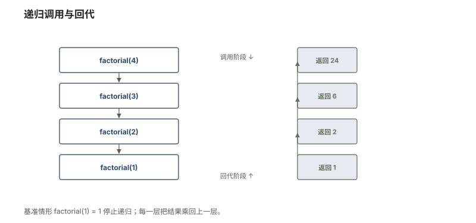

SOE105 · 第 10 章
作用域与递归
Functions: Scopes & Recursion
虚线下划线为术语；悬停查看中文、英文与释义，完整词典见“术语”。
本章目录
本章接上函数的两个“看不见的维度”：变量在哪些代码里有效（作用域），以及函数调用自己（递归）。作用域决定一个名字指向哪块存储，递归则把“调用自己”变成一种分解任务的方法。
本章要点
- 声明的作用域是标识符有效的代码块；块内声明的变量出了块就不存在。
- 全局声明在所有函数体之外，局部声明在函数体内；同名标识符可以在程序不同位置重复声明。
- 函数内的同名局部变量会遮蔽全局变量，函数里读到的是局部那一份。
- 滥用全局变量会让调试变难；需要写回结果时，优先把局部变量按引用传给函数。
- 函数可以单独测试：driver 驱动它跑多组输入，stub 用同样的接口先顶替未完成的函数。
- 递归要有“更小的同类子问题”和“最小规模的非递归解”，缺一不可。
- 递归写法可简化为“终止条件 + 终止返回值 + 用修正参数调用自己”。
10.1 块作用域：一个编译错误
讲义用一个很小的程序开场：main 里先声明 int i = 2 并打印，然后进入一对花括号，在块内声明 double d = atof("12.34") 并打印，出了块再打印一次 d。幻灯片上标着“Error here! Why??”，指的就是块外那次打印。
int main()
{
int i = 2;
cout << "i=" << i << endl;
{
double d = atof("12.34");
cout << "d=" << d << endl;
}
cout << "d=" << d << endl; // Error here!
return 0;
}原因就是作用域scope：一个声明的作用域，是这个标识符可以被有效使用的代码块。d 的声明发生在内层花括号里，它的作用域就是这个块；一旦离开这对花括号，d 这个名字不再有效，编译器找不到它，于是报错。i 声明在 main 的块里，所以后面还能用。
这也解释了为什么“变量什么时候被创建”与“变量在哪里能用”是两件相关但不同的事：块结束时，块内声明的变量随之消失；而它的名字从声明点开始、到块结束为止才有效。
L12a p.1–3
10.2 全局声明与局部声明
讲义把声明分成两类。全局声明global declaration写在我们所有函数体之外、主程序之外；按惯例，它和其它全局声明放在一起，摆在程序文件的开头。局部声明local declaration写在函数体内部；局部声明的变量不能在声明它的函数之外被访问。
允许在不同位置声明同名标识符，这是 C/C++ 的一条基本规则，也是理解后面“遮蔽”现象的前提。讲义用一张作用域示意图把一段程序的每个区域标了出来：全局变量 y 有自己的作用域，全局函数声明 f 有它的作用域，main 有自己的作用域，f 也有自己的作用域；main 里的 a 覆盖整个 main，while 块里的 b 只覆盖那个块；f 里的 m、n 覆盖整个 f，o 只覆盖声明之后的部分，而 f 里又声明了一个 y，它只覆盖 f 内声明之后的部分。
Clean vector diagram of nested scopes in a C++ program: a tall outer rectangle labelled global scope containing y; inside it two separate rectangles labelled scope of main() and scope of f(); inside main a smaller rectangle labelled scope of b nested in the while block; inside f a small rectangle labelled scope of o; a second small box labelled local y drawn inside f and shaded to show it hides the global y. Flat 2D, thin 1.5 px strokes, muted slate blue and warm grey palette, white background, English labels, no cartoon, no gradient, no shadow.
这张图值得照着画一遍：每个矩形代表一段“名字有效”的区域，矩形可以嵌套，但不会交叉。判断一个名字指向谁，就看从使用点往外找，最先遇到哪个声明。
L12a p.3–5
10.3 同名与遮蔽：这段代码里的 y 是谁
讲义的作用域示例程序里有两个 y：文件开头有全局的 int y = 38;，函数 f 里又有局部的 int y = 27;。幻灯片在代码旁连问两句“这个 y 指哪一个？那这个呢？”，考的正是遮蔽shadowing。
int y = 38; // global
void f(int m, int n);
int main() {
int a = 53;
while (a < 100) {
int b = 90;
a += b++;
a++;
}
y = 2 * a; // refers to the global y
f(2, 3);
return 0;
}
void f(int m, int n) {
int o = 12;
m = n + o;
int y = 27; // local y hides the global y
m += y;
}规则只有一条：在某个作用域内，如果存在同名的局部声明，那么该作用域内（从声明点之后）出现的这个名字都指向局部那一份，全局的那一份被“挡住”。所以 main 里的 y = 2 * a 改的是全局 y；f 里的 m += y 用的是局部 y = 27，与全局 y 无关。f 结束时局部 y 消失，全局 y 仍是 2 * a 的值。
讲义还留了一个细节：while 块里声明了 b，每次进入块都会重新创建 b 并赋值为 90；a 在块外声明，所以它能跨轮次保留累加的结果。这正是“块作用域”与“函数作用域”的差别在循环里的体现。
L12a p.4–5
10.4 全局变量的风险：一个反例
讲义用 counter 演示了全局变量最容易踩的坑。程序里声明全局 int counter;，函数写成 void increment(int counter)，main 里先 counter = 1，再调用 increment(counter)，最后打印 counter。
int counter;
void increment(int counter) { // parameter hides the global
counter += 1;
cout << counter << endl;
counter++;
}
int main() {
counter = 1;
increment(counter); // pass by value
cout << counter << endl;
return 0;
}结果是：函数里打印 2，main 里打印 1。两件事同时发生——形参 counter 遮蔽了全局 counter，而且它是按值传递的副本，函数里的两次自增都作用在副本上，全局的那一份从头到尾没被碰过。
讲义给出的改进是把形参改成引用：void increment(int &counter)。这样形参不再是副本，而是全局 counter 的另一个名字；函数里 counter += 1 让它变成 2 并打印 2，counter++ 让它变成 3，回到 main 打印 3。程序的输出变成 2 和 3。
但讲义真正的建议不是“用引用去改全局变量”，而是：无节制地使用全局变量会导致混乱、让调试变困难；与其在函数里直接用全局变量，不如把局部变量按引用传进去。前者把依赖藏在函数体里，读签名看不出来；后者把依赖写在参数表上，一眼可见。
L12a p.6–7
10.5 全局变量练习：五段输出的推演
讲义给了一道综合题：四个全局变量 A、B、C、D，函数 Two(int A, int B, int &D) 把 B 改成 21、把 D 改成 23 后打印四个值；函数 One(int A, int B, int &C) 里另有一个局部 int D，把 A、B、C、D 分别赋成 10、11、12、13 后打印，再调用 Two(A, B, C)。main 先把全局赋成 1、2、3、4，调用 One，打印，再调用 Two，再打印。
int A, B, C, D;
void Two(int A, int B, int &D) {
B = 21; D = 23;
cout << A << " " << B << " " << C << " " << D << endl;
}
void One(int A, int B, int &C) {
int D; // local variable
A = 10; B = 11; C = 12; D = 13;
cout << A << " " << B << " " << C << " " << D << endl;
Two(A, B, C);
}逐段推：One 内部第一行打印 10 11 12 13。注意 One 的 C 是引用，绑定到 main 的全局 C，所以 C = 12 已经把全局 C 改成了 12；而 One 的 D 是局部变量，赋值 13 只影响自己。
接着 Two(A, B, C)：Two 的 A、B 按值收到 10 与 11，D 按引用绑定到 One 的 C（也就是全局 C）。函数里 B 改成 21、D 改成 23——全局 C 随之变成 23。打印时 A 是 10、B 是 21、C 是全局的 23、D 也是 23，得到 10 21 23 23。
回到 main 打印全局四个值：A = 1、B = 2 没被动过，C = 23，D = 4，得到 1 2 23 4。再调用 Two(A, B, C)：A、B 按值收到 1 与 2，D 绑定全局 C；函数里 B 改成 21、C 改成 23，打印 1 21 23 23。最后一次打印仍是 1 2 23 4。
讲义给出的五段输出依次是：10 11 12 13、10 21 23 23、1 2 23 4、1 21 23 23、1 2 23 4。能独立推出这五行，说明遮蔽、传值与传引用三件事已经串起来了。
L12a p.7–8
10.6 单独测试：driver 与 stub
函数的一个主要优势是可以脱离程序其余部分单独设计与测试。讲义给了两个工具。第一个是驱动程序driver program：写一个只负责调用的小 main，用多组输入反复调用待测函数。它的例子是用 for 循环让 i 从 1 走到 13，每次调用 printCard(i) 并换行，一屏就能看出 13 种输入是否都被正确处理。
void main() {
int i;
for (i = 1; i <= 13; i++) {
printCard(i);
cout << " " << endl;
}
}第二个是桩stub：当测试某个程序时需要一个“还没写”的函数，就用桩先顶上。桩与原函数有相同的接口，但没有完整实现；通常只包含一个简单的 return 或一句 cout。讲义的例子是 void printcard(int i) { cout << i; }——它不打印牌面，只把数字吐出来，足以验证调用链是否通了、参数有没有传对。
这两个工具的价值在于把“接口是否正确”与“实现是否正确”分开检查。先让桩通过编译与调用，再逐步把桩换成真实现，每换一个就重跑 driver；一旦输出变了，问题一定在刚换的那一段。
L12a p.8–10
10.7 递归：一个函数调用自己
讲义用一段没有注释的程序提问“这段程序做什么”：foo(n) 在 n <= 1 时返回 1，否则返回 n * foo(n - 1)。答案就是阶乘——foo(3) 等于 6。它先展示了一次手算的展开过程：foo(3) 判断 3 <= 1 不成立，于是要算 3 * foo(2)；foo(2) 又要算 2 * foo(1)；foo(1) 满足 1 <= 1，直接返回 1；然后逐层回代，2 * 1 = 2，3 * 2 = 6。


绘图提示词
Clean vector diagram of a recursive call trace for foo(3): three stacked call boxes foo(3) with 3 times foo(2), foo(2) with 2 times foo(1), foo(1) returning 1; downward arrows on the left labelled call, upward arrows on the right labelled return with values 1, 2, 6; a side note that each call has its own parameter n. Flat 2D, thin 1.5 px strokes, muted slate blue and warm grey palette, white background, English labels, no cartoon, no gradient, no shadow.
递归recursion被讲义定义为一种把任务分解成更小任务的方法，并且要求三件事同时成立：至少有一个子任务是“同一个任务的更小实例”；最小规模的那个实例有非递归的解法；每次调用都朝这个最小实例靠近。用阶乘写出来就是分段定义：n > 1 时 n! = n × (n − 1)!，n = 1 时 n! = 1。
每次递归调用都是一次真正的函数调用，形参 n 各自独立：foo(3) 的 n 是 3，foo(2) 的 n 是 2，互不干扰。回代时上一层的 n 还在，所以 3 * 2 才能算成 6。这一点与上一章的传值规则完全一致。
L12b p.1–6
10.8 递归与迭代：同一件事的两种写法
讲义把同一道阶乘题用循环写了一遍：n <= 1 时直接返回 1，否则令 product = 1，用 for 让 i 从 1 走到 n，每次 product *= i，最后返回 product。这就是迭代iteration写法。
int factorial_iterative(int n) {
if (n <= 1) return 1;
int product = 1;
for (int i = 1; i <= n; i++) {
product *= i;
}
return product;
}讲义对两种写法给了两条判断：递归写法一旦习惯，可能比非递归写法更容易写；但递归解法不一定和同问题的非递归解法一样高效。它没有展开“为什么不高效”，只留下这个结论——这在做作业选型时够用了：先求写对，再考虑要不要改成循环。
讲义还列了其它递归应用。斐波那契数Fibonacci numbers：0、1、1、2、3、5、8、13、21、34……每个数是前两个数之和，递归定义为 F(0) = 0、F(1) = 1、其余 F(n) = F(n − 1) + F(n − 2)。二分查找也能写成递归：把待查元素与数组中间元素比较，相等就停止并返回；否则在“可能存在”的那一半（若非空）上继续做二分查找。
把二分查找写成递归，恰好说明递归不限于数学公式：只要能把问题描述成“在更小的区间上做同一件事”，就能递归。第 8 章的循环版本与这里的递归版本解决的是同一个问题，区别只在“缩小搜索范围”是靠改 lower/upper 还是靠再调用一次自己。
L12b p.6–9
10.9 递归写法模板与五个例子
讲义把递归的骨架抽成一个通用形式：先写 if (终止条件) return 终止值；如果有第二个终止条件，也在这里补上；最后 return 一个值，或者 return 一次“用修正参数调用自己”的结果（也可能是两次递归调用相加）。
int rec(<some parameters>) {
if (<stopping condition>)
return <stopping value>;
// second stopping condition and return value, if any
return value or rec(<revised parameters>)
(+ rec(<revised parameters>));
}例一是幂：xʸ 在 y = 0 时为 1，否则为 x · xʸ⁻¹。写成 int exp(int x, int y) { if (y == 0) return 1; return x * exp(x, y - 1); }——终止条件是 y == 0，修正参数是 y - 1。
例二、例三是数组求和与求积。求和的分段定义是：size = 0 时为 0，否则为 Sum(A, size − 1) + A[size − 1]；求积把 0 换成 1、加号换成乘号。代码只有两行，思路都是“把最后一个元素摘出来，剩下的交给下一次调用”。
double asum(int a[], int size) {
if (0 == size) return 0;
return asum(a, size - 1) + a[size - 1];
}
double aproduct(int a[], int size) {
if (0 == size) return 1;
return aproduct(a, size - 1) * a[size - 1];
}例四数零：统计一个非负整数里数字 0 的个数，zeros(10200) 应返回 3。讲义用了三个分支：n == 0 返回 1（0 本身算一个零）；n < 10 返回 0（一位非零数没有零）；n % 10 == 0 返回 1 + zeros(n / 10)；否则返回 zeros(n / 10)。
例五数因子：判断 n 里含有几个因子 m，例如 n = 48、m = 4 时结果为 2（48 = 4 × 4 × 3）。代码是 if (n % m != 0) return 0; 否则 return 1 + factors(n / m, m);——不能整除就停，能整除就记一个并继续除以 m。
L12b p.9–15